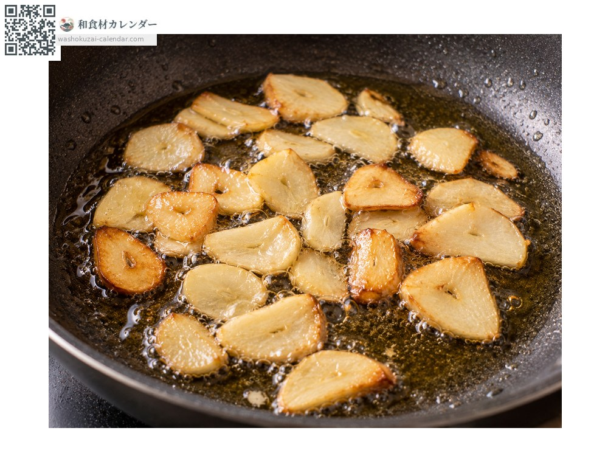
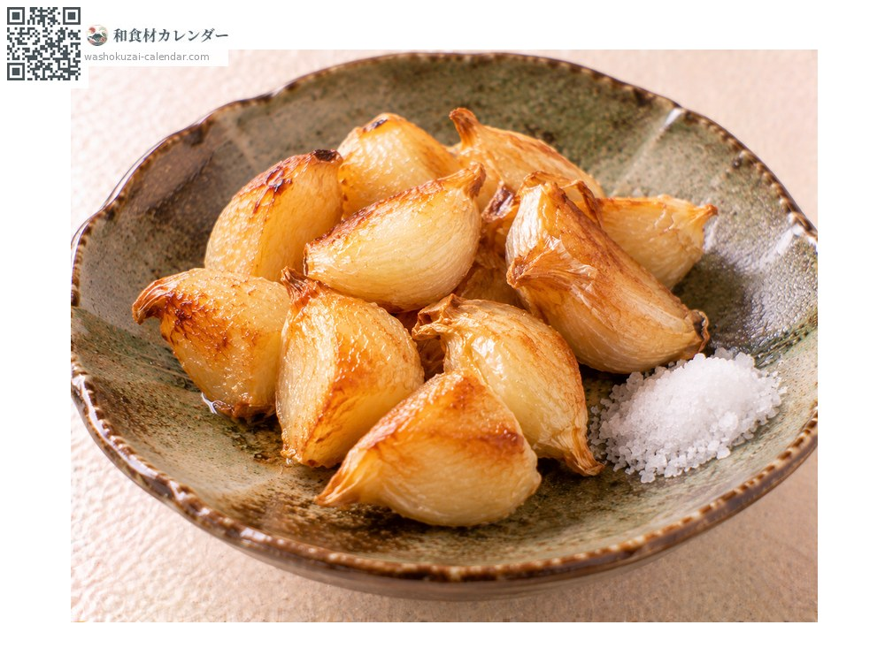
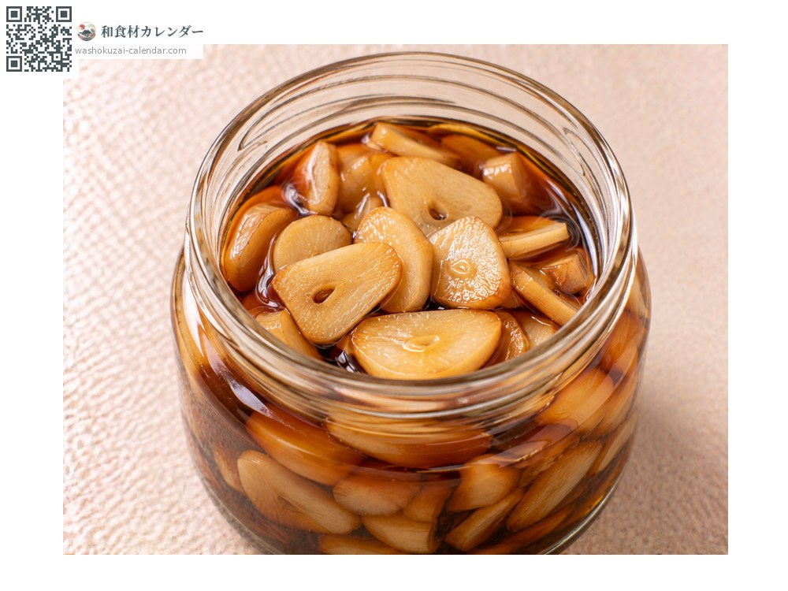
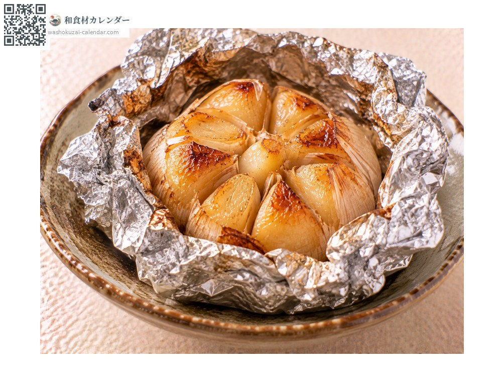

蔬菜
大蒜
ニンニク にんにく ninniku
別名ninniku
當令時期為6月、7月、8月

當令時期
1月
2月
3月
4月
5月
6月
7月
8月
9月
10月
11月
12月
當令有供應
料理方式

爆香
從冷油以小火慢慢加熱，燒焦會產生苦味。

素炸
整顆油炸，口感鬆軟而香甜。

醬油漬
切薄片浸漬，也能當作調味料使用。

鋁箔燒
整顆包起來烤，會變得滑潤甘甜。
挑選方式
外皮白而乾燥緊實、拿起來沉。沒有發芽。
保存方式
吊掛在通風的陰涼暗處。冷藏或冷凍也能抑制發芽。
主要產地
小知識
青森縣的產量約佔全國七成，其中福地白的蒜瓣大而潔白。切開或磨碎時酵素會作用並產生獨特香氣，想讓香氣更明顯就切得細一些。黑蒜則是經過熟成讓糖度提高的產品。